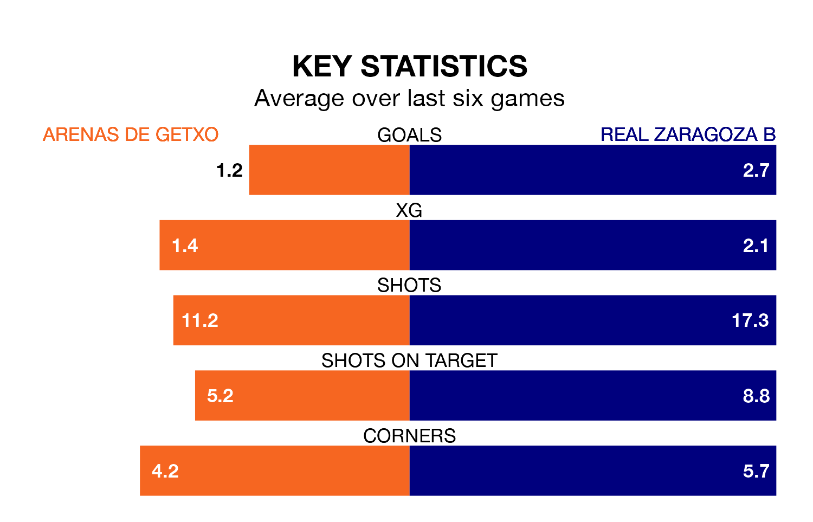

Real Zaragoza B travel to Arenas de Getxo on early Sunday in the Segunda División RFEF Group 2.
The visitors come into the game on the back of a win in their last match, having beaten AD San Juan 3-0 at home, with goals from Marcos Cuenca Aranda.
Arenas de Getxo also won their last match, 1-0 against Deportivo Alaves B.
With 46 goals in 31 games so far this season, Zaragoza B are scoring more than average in the league with 1.5 goals per game. And they are conceding fewer than average, letting in 30 goals at a rate of 1.0 per game.
Arenas de Getxo, meanwhile, are below average scorers, with 0.9 goals per game, compared to a league average of 1.1. They have conceded 1.1 goals per game.
The away team are fourth in the table after 31 games, of which they have won 15 and drawn 10, earning 55 points.
The hosts are eight places behind Zaragoza B in 12th, with eight wins and 12 draws putting them on 36 points.
Arenas de Getxo are in mixed form in the Segunda División RFEF Group 2, with three wins and a draw from their last six games.
With four wins and a draw over that period, Zaragoza B's form is better – they have taken 13 points from 18, compared to Arenas de Getxo's 10.
Updated: 11:31 (UTC), 15/04/24